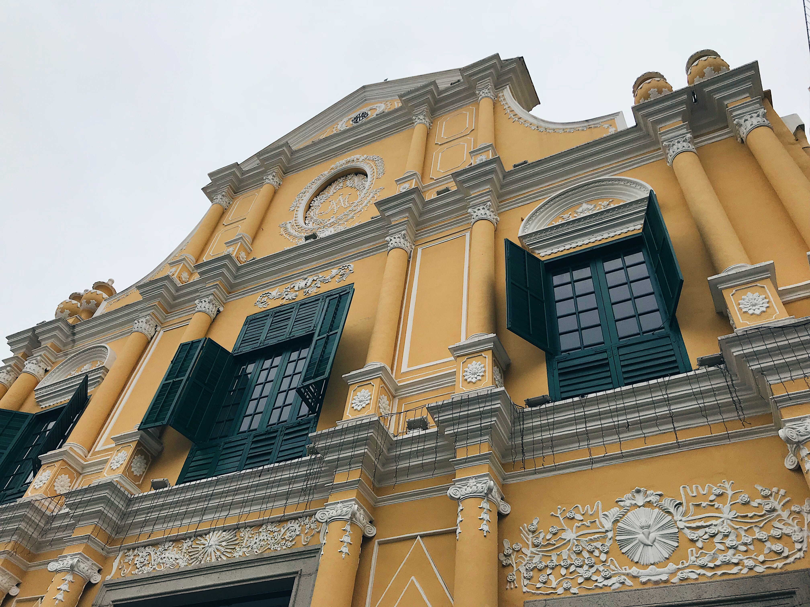

2008
-
08年的时候，爸妈因为去看北京奥运会，买了我人生中第一台单反，从此我就抱着单反不撒手，走到哪拍到哪。
2009
August 📍Malaysia，Singapore
-
还记得在新加坡的夜间动物园，因为不能开闪光灯拍照而拍不到动物而哭红鼻子的我；还有在马来西亚云顶坐上巨大的摩天轮。
2010
July 📍Hong Kong
- 香港给我的初印象是很美好的。
- 港人礼貌又热情，港食好好味。
- 霓虹灯和民居小楼错落在大厦之间，随手一拍都是港风海报。
2014
August 📍Korea
- 中考完收到了当时最流行的摄影手机，妈妈揣着微单我带着手机，在首尔走街窜巷的狂拍。
- 还有济州岛，一个生活节奏慢悠悠的世外桃源，清晨爬上成日峰，“风吹草低见牛羊”。
2017
August 📍Japan
- 坐在大巴车上，从关东晃到关西。海边的镰仓，古香古色的京都，避暑胜地富士山，还有摩登东京。
- 夏季的夜晚，和哥哥晃悠哉横滨街头，规则的都不清楚的我们，看完一场露天棒球赛，跟素不相识的路人欢呼。再买两个冰淇淋，慢走走的走回去。

2018
January 📍Thailand
- 在寒冷冬日去东南亚避暑，穿着碎花裹身裙在露天酒吧看夕阳。
- 夜晚的清迈夜市熙熙攘攘，捧着西瓜汁把泰式小吃从头尝到尾。

February 📍Macau
- 澳门，一个两日暴走可以完成打卡的弹丸之地，但我们选择了慢慢逛。
- 好味的官也街铺满葡式花砖，路边的路牌写着“仙女巷”，对街就是金碧辉煌的威尼斯人。
- 陪妈妈这个建筑狂热饭走遍了澳门的教堂，用小小微单记录下了不同花色的花砖，还有垂涎欲滴的安德鲁蛋挞澳门猪扒包。
- 
August 📍Italy
- 欧洲之旅的第一站到达了意大利。
- 迎接我的是罗马的骄阳和在许愿池边被吉普赛女孩偷走的同团游客钱包。
- 走过了当年赫本走过的路，尝过了赫本爱的冰淇淋。
- 可能是我偏爱生活气息，总觉得罗马、比萨和佛罗伦萨，美则美矣，但不够平易近人。
- 威尼斯一如传说中的那么美。
August 📍Germany
- 喜欢慕尼黑的理由可能是，每天晚上可以在露天小酒馆里，和发小夸夸其谈时，周围三三俩俩的居民牵着巨大的金毛散步。
- 或者是在鲜艳的水果摊前，帮团友为了几欧元和摊主用蹩脚英语交谈。
- 抑或是坐在大广场上等待钟声。

August 📍Austria
- 我们住在一个滑雪酒店里。因为是夏季，基本没有游人。
- 酒店的装饰，很温暖的北欧风格。早晨一出来，就听到山坡上牛吃草的铃铛声。
-

August 📍Switzerland
- 瑞士和奥地利，不同于法德意，总是很温暖，很美好。
- 在中心广场逛街那天，下了暴雨，当时被淋湿了，跟发小们躲进巧克力店，点了昂贵的下午茶套餐，却不敢动手。
- 现在想想连躲雨都是这么美好。

August 📍France
- 法国，是许多人的浪漫之都，艺术圣地。
- 法国的第一站是科尔马小镇，中餐厅第二季的拍摄地。法国人骨子里就是浪漫的，一切的配色都刚刚好。
- 枫丹白露，是徐志摩翻译的一个诗意名字，不过枫丹白露宫也却如其名这么美好。我们在后院踢着石子聊天，抬头就望见法国少年靠在大树上看书。
- 当你能说一点法语，有一班朋友，或一个恋人，又不用赶时间赶工作，巴黎还真是叫人晕浪的。
- 当然，会说英语其实已经足够了。可以让我漫步在香榭丽舍大街，买一条裙子，再买一盒马卡龙边走边吃。
2019
November 📍Xiamen
- 晚秋季节去了厦门，二十多度的气温正合适。
- 时隔四年又来了，变化不大，但我不是以前那个往景区跑的，变成了一心钻进居民区体会烟火气的我。
在这里可以找到我
微信订阅

摄影作品和旅行游记
Instagram

@bonyyyy_